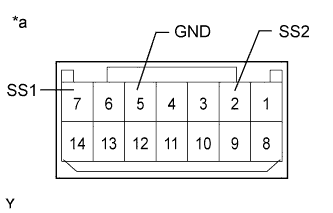

ENGINE SWITCH > INSPECTION |
| 1. INSPECT ENGINE SWITCH |
|  |
Measure the resistance according to the value(s) in the table below.
| Tester Connection | Switch Condition | Specified Condition |
| 7 (SS1) - 5 (GND) | Pushed | Below 1 Ω |
| 2 (SS2) - 5 (GND) | Pushed | Below 1 Ω |
| 7 (SS1) - 5 (GND) | Not pushed | 10 kΩ or higher |
| 2 (SS2) - 5 (GND) | Not pushed | 10 kΩ or higher |
| *a | Component without harness connected (Engine Switch) |
Apply battery voltage to the terminals of the switch and check the illumination condition of the switch.
| *1 | Indicator Light | - | - |
| *a | Component without harness connected (Engine Switch) | - | - |
| Measurement Condition | Specified Condition |
| Battery positive (+) → Terminal 11 (SWIL) Battery negative (-) → Terminal 5 (GND) | Illuminates (illumination of lettering) |
| Battery positive (+) → Terminal 12 (INDS) Battery negative (-) → Terminal 5 (GND) | Illuminates (green) |
| Battery positive (+) → Terminal 13 (INDW) Battery negative (-) → Terminal 5 (GND) | Illuminates (amber) |